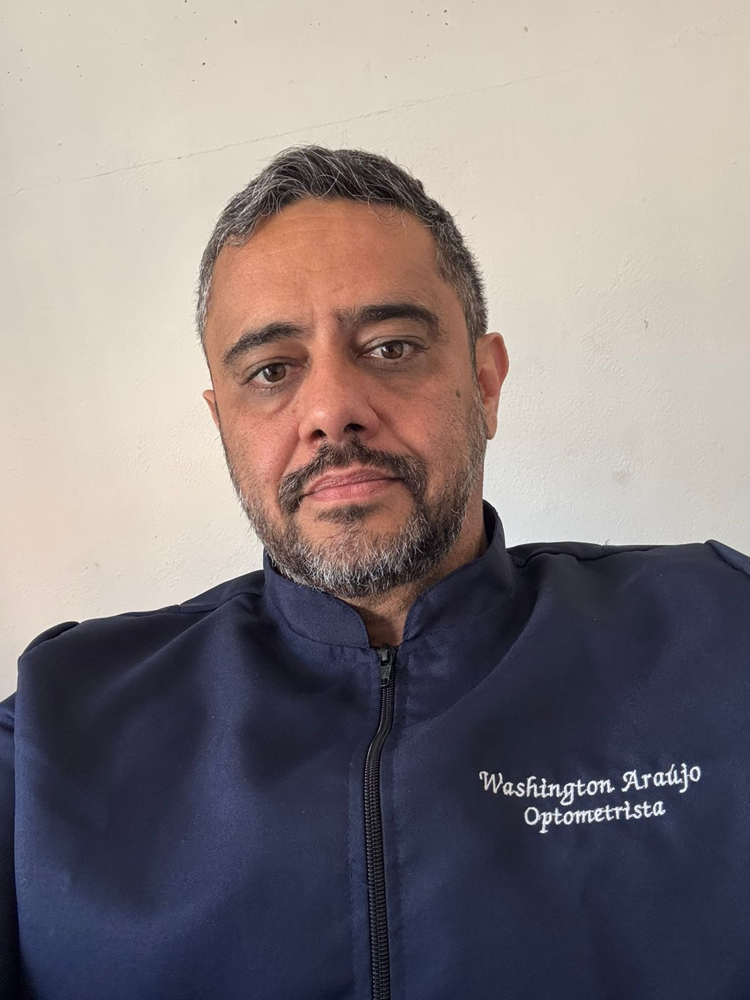
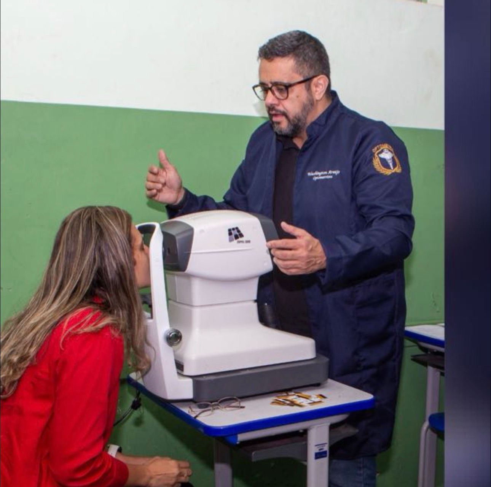
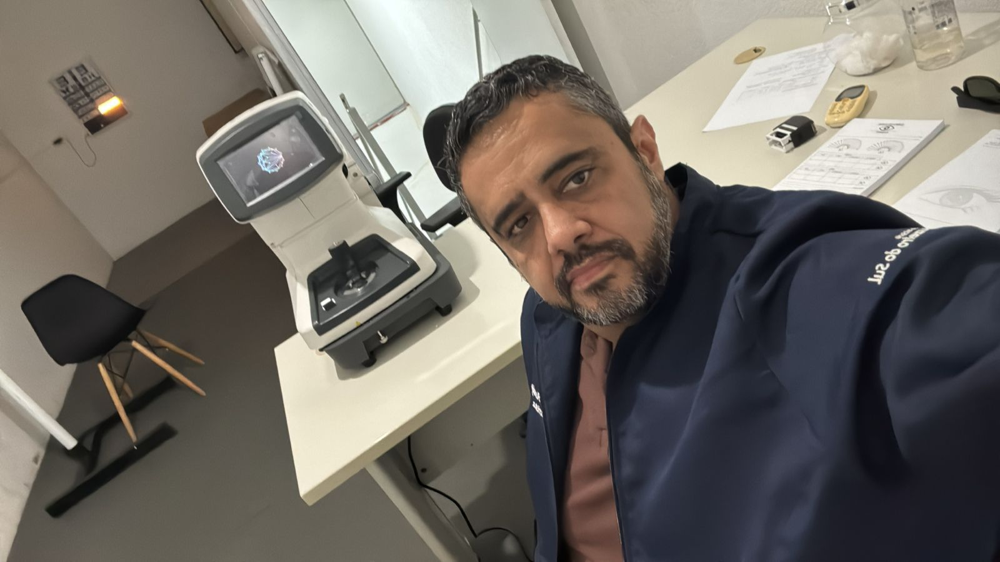
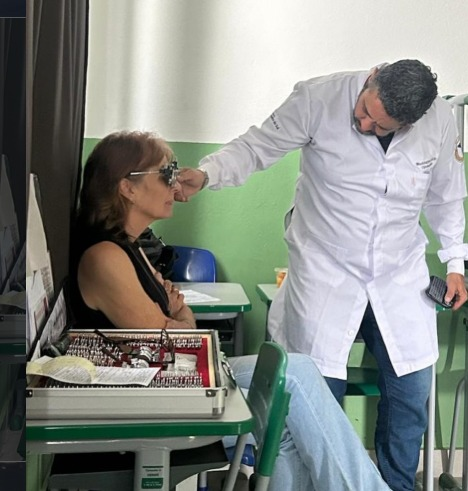
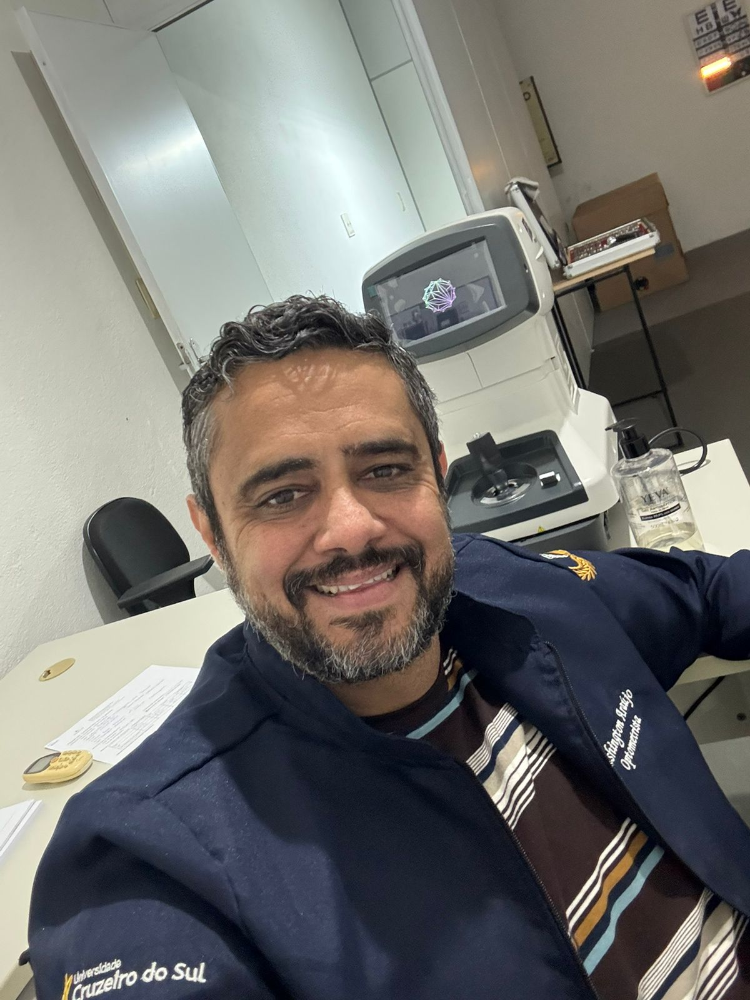

Portfólio & Rotina
Conteúdo no Instagram
Acompanhe no perfil @washington_optometrista as atualizações dos atendimentos itinerantes e dicas para a saúde dos seus olhos.
.png)
.png)
.png)
.png)
.png)
Unindo 26 anos de história e domínio técnico do segmento óptico à formação acadêmica em Optometria para oferecer uma avaliação visual integral, ética e altamente personalizada.

Especializado, Ético e Humanizado


Minha atuação é sustentada por uma sólida bagagem de mercado, unindo o entendimento completo de produtos ao diagnóstico visual avançado.
Anos dedicados ao gerenciamento óptico e relacionamento direto com o público. Compreendo perfeitamente as dores, preferências e necessidades cotidianas dos usuários de óculos.
Domínio profundo dos processos industriais de surfaçagem, tratamentos antirreflexo e fabricação de lentes de alta tecnologia. Conhecimento essencial para indicar a lente perfeita.
Formação acadêmica voltada à saúde primária dos olhos. Aplicação de exames objetivos e subjetivos baseados em ciência para reabilitar e otimizar sua qualidade de visão.
"Proporcionar a cada paciente uma visão mais confortável, eficiente e segura, contribuindo para sua qualidade de vida através de um atendimento ético e cuidadoso."
Como Bacharel em Optometria itinerante, atuo sob o conceito de compartilhamento de espaços técnicos e parcerias estratégicas, atendendo de forma próxima e conveniente.
Realizo exames agendados em óticas e clínicas parceiras estruturadas nas cidades de atuação. Você agenda o horário e recebe uma avaliação visual de excelência pertinho de você, com equipamentos avançados levados até o local.

Fidelize seus clientes oferecendo o serviço especializado de um profissional bacharelado. Contrate dias de atendimento exclusivo para sua ótica, proporcionando exames de vista éticos que geram maior satisfação e assertividade nas vendas de lentes especiais.

Entenda o papel preventivo e compensatório da Optometria. Atuamos na avaliação da função visual sem a prescrição de medicamentos ou procedimentos cirúrgicos.
Análise ocular detalhada para detecção de anomalias ópticas de foco. Identificamos e quantificamos Miopia, Hipermetropia, Astigmatismo e Presbiopia, sugerindo a correção perfeita por óculos ou lentes.
Auxílio especializado no posicionamento da armação, centralização de pupilas e verificação de alturas. O alinhamento mecânico perfeito do centro óptico da lente com o seu olho evita desconfortos severos.
Consultoria para quem passa longas horas no computador, celular ou estudos. Soluções personalizadas em lentes com tratamentos de filtro azul e exercícios visuais preventivos para diminuir a fadiga ocular.
Pequenas mudanças no ambiente e hábitos diários protegem sua visão do estresse e do cansaço comuns do mundo digitalizado moderno.
Ao trabalhar em frente a telas digitais, faça uma pausa a cada 20 minutos. Direcione o olhar para um ponto a pelo menos 6 metros (20 pés) de distância por 20 segundos. Isso reduz a tensão de convergência dos olhos.
Nossa taxa de piscada cai cerca de 60% ao fixarmos telas, evaporando o filme lacrimal. Lembre-se de piscar voluntariamente para manter a superfície ocular lubrificada, evitando olhos secos e irritações.
A centralização perfeita da lente de grau em relação ao centro pupilar evita distorções ópticas indesejadas. Medições e montagens incorretas costumam ser as grandes vilãs de dores de cabeça e cansaço constante.
Acompanhe no perfil @washington_optometrista as atualizações dos atendimentos itinerantes e dicas para a saúde dos seus olhos.